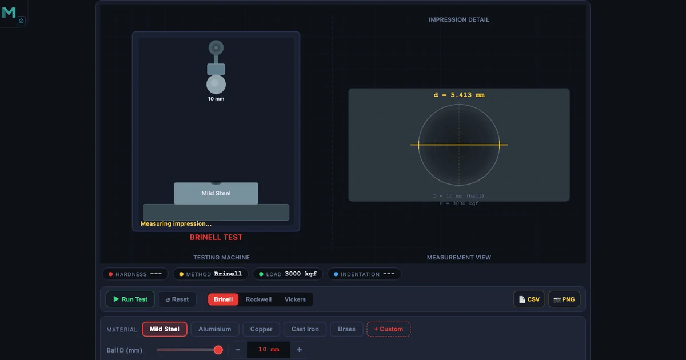
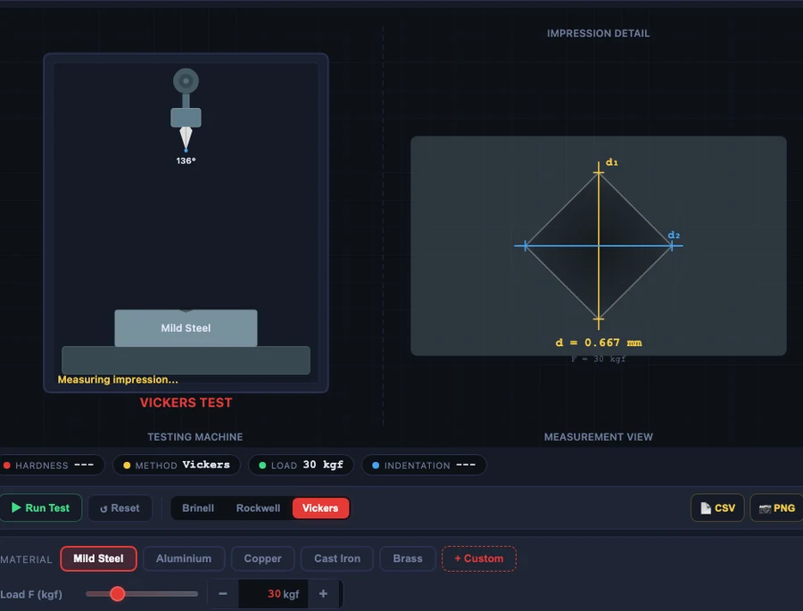

Hardness Testing Simulator — Brinell, Rockwell, and Vickers Methods Compared

- Brinell, Rockwell, and Vickers all measure resistance to indentation but differ in indenter and readout: Brinell uses a 10 mm ball and measures impression diameter (BHN = P / [(πD/2)(D − √(D² − d²))]); Rockwell measures penetration depth directly (HRC = 100 − e/0.002, HRB = 130 − e/0.002); Vickers uses a 136° diamond pyramid (HV = 1.854 × F/d²).
- Use Brinell for coarse-grained castings and forgings (valid below 650 HB), Rockwell for fast production QC (HRC 20–70 for hardened steel, HRB 20–100 for soft metals), and Vickers for thin coatings and microhardness on one scale spanning 5–3000 HV.
- The scales are not interchangeable — conversions (ASTM E140, e.g. HRC ≈ (BHN − 12) / 10.4) are approximate, so always test in the scale the drawing specifies.
What Hardness Really Measures — and Why It Matters in Engineering
Hardness isn't a fundamental material property the way density or Young's modulus is. It's a measured resistance to permanent indentation — a small, local plasticity test. But that one number tells you an enormous amount. It correlates with yield strength, tensile strength, wear resistance, and machinability. A quick hardness check on a delivered batch of steel can confirm heat treatment, detect wrong-grade substitutions, and catch surface decarburisation before a part goes into service.
Here's the thing students often miss: there's no single "hardness scale." Brinell, Rockwell, and Vickers each measure the same underlying property by a different method, using different indenters, loads, and measurement techniques. They're not interchangeable by default — each was designed for a specific range of materials and test conditions. Knowing which to use, and why, is the practical skill.
The Hardness Testing Simulator lets you switch between all three methods, change the load and indenter geometry, and watch the calculated hardness number update in real time. Before we dive into each method, it helps to understand what the simulator is actually computing — and what the numbers mean.
The Brinell Method — Ball, Load, and the BHN Formula
Brinell testing presses a hardened steel or tungsten carbide ball (diameter D = 10 mm in the standard test) into the material under a specified load, holds it for 10–15 seconds, then removes it. You measure the diameter of the resulting impression under a microscope and plug it into the formula:
\[\text{BHN} = \frac{P}{\dfrac{\pi D}{2}\left(D - \sqrt{D^2 - d^2}\right)}\]
where \(P\) is the applied load in kgf, \(D\) is the ball diameter in mm, and \(d\) is the impression diameter in mm. The denominator is the curved surface area of the spherical cap — you're dividing load by the actual contact area, not the projected circle.
For steel, the standard load is P = 3000 kgf with a 10 mm ball. Drop in D = 10, P = 3000, d = 3.5 mm and you get BHN ≈ 293 — a reasonable hardness for medium-carbon steel after normalising. Try d = 4.5 mm and the number falls to around 163 BHN, which is softer, annealed steel territory. Larger impression means lower hardness. That's intuitive.
The load isn't fixed — it depends on the material. The key is the load-to-diameter ratio \(F/D^2\): 30 for steel and cast iron, 10 for copper and brass, 5 for aluminium alloys. Getting this wrong gives you an impression that's either too shallow (unreliable measurement) or too deep (ball sinks past the valid range and the formula breaks down). The simulator enforces the correct ratio automatically when you select the material group.
Brinell's big advantage is its large ball indenter. That 10 mm ball averages across grains, inclusions, and local microstructural variations — which makes it ideal for coarse-grained materials like castings and forgings where a tiny indenter might land on a hard carbide particle and give a misleading reading. Its limitation: above 650 HB the tungsten carbide ball starts to deform, so you can't use Brinell for very hard materials.
Rockwell Testing — Speed and Scale Selection
Rockwell does something clever. Instead of measuring indentation diameter under a microscope after the test, it measures the depth of penetration directly, in real time, as part of the test cycle. Apply a minor seating load (10 kgf), set the depth gauge to zero, apply the major load, remove it, and read off the hardness number immediately. No microscope. No post-test measurement. That's why Rockwell dominates production-line quality control — you can test a hundred parts an hour.
The trade-off is that Rockwell has multiple scales, each with its own indenter and major load, designed for different material groups. The two you'll use most are HRC and HRB.
Rockwell C (HRC) — Hardened Steel and Tool Steel
HRC uses a 120° diamond Brale cone indenter under a major load of 150 kgf. The hardness number is calculated from the permanent depth increase \(e\) (in mm) after removing the major load:
\[\text{HRC} = 100 - \frac{e}{0.002}\]
If the permanent depth increase is e = 0.084 mm, then HRC = 100 − (0.084/0.002) = 100 − 42 = 58 HRC. That's a well-hardened tool steel — a cutting tool or die steel after quench and temper. The valid range for HRC is 20–70; below 20 the cone indenter is too large relative to the impression and gives unreliable readings, which is why you switch to HRB for softer materials.
Rockwell B (HRB) — Soft Metals and Annealed Alloys
HRB uses a 1/16 inch (1.588 mm) steel ball instead of the diamond cone, with a major load of 100 kgf. The formula shifts by 30 to give a wider range for softer materials:
\[\text{HRB} = 130 - \frac{e}{0.002}\]
A depth of e = 0.080 mm gives HRB = 130 − 40 = 90 HRB. That's annealed carbon steel or a medium-strength aluminium alloy. HRB covers 20–100 HRB; above 100 the ball starts sinking into the surface non-linearly and you need to switch to HRC.
In the simulator, switching between HRC and HRB is a single click — and you immediately see how the indenter geometry changes, the major load changes, and the formula constant shifts from 100 to 130. That connection between the physical setup and the number is exactly what a static textbook table can't show.
Vickers Hardness — One Scale to Rule Them All
Vickers uses a square-based diamond pyramid with a 136° included angle between opposite faces. The test loads range from 0.001 kgf (micro-indentation) to 120 kgf (macro testing), and the formula is:
\[\text{HV} = \frac{1.854 \times F}{d^2}\]
where \(F\) is the applied force in kgf and \(d\) is the mean diagonal of the square impression in mm. The constant 1.854 comes from the geometry of the 136° pyramid — specifically, it's \(2\sin(136°/2)\) divided into the load.
Standard macro test: F = 30 kgf, d = 0.287 mm. Plug in: HV = 1.854 × 30 / 0.287² = 55.62 / 0.08237 ≈ 675 HV. That's a high-speed tool steel or heavily case-hardened surface. Now switch to microhardness: F = 0.5 kgf, d = 0.033 mm → HV = 1.854 × 0.5 / 0.033² = 0.927 / 0.001089 ≈ 851 HV. That second reading could be a thin TiN coating on a cutting insert — a measurement that would be completely impossible with Brinell or Rockwell because the indenter would punch straight through the coating into the substrate.
That's the defining advantage of Vickers: a single scale that runs from 5 HV (very soft metals) to 3000 HV (industrial diamond-like coatings) without any scale changes or indenter swaps. You don't need to know in advance whether your material is hard or soft. You pick a load appropriate to your specimen thickness, measure the diagonal, and you're done.

Choosing the Right Method — A Decision Framework
Students frequently ask why we need three different methods when they all measure hardness. The short answer: each was optimised for a different combination of material, specimen geometry, and test environment. Here's how to think through the choice:
Use Brinell when your material has a coarse or heterogeneous microstructure — grey cast iron, large forgings, weld heat-affected zones. The 10 mm ball averages across microstructural variations that would fool a small indenter. It's also the method of choice when surface finish is poor (rough castings) because the large impression diameter is easier to measure accurately relative to any surface texture. Avoid it above 650 HB — the ball deforms.
Use Rockwell when speed matters. Production QC, incoming inspection, heat treatment verification on batches of parts — anywhere you need a number in seconds without post-test microscopy. Know your scale: HRC for hardened steels (tool steel, case-hardened gears, bearing races), HRB for softer steels and non-ferrous alloys. The part must be thick enough that the indentation doesn't deform the back surface — generally at least 10× the indentation depth.
Use Vickers when precision and versatility matter more than speed. Thin sheet metal, electroplated coatings, cemented carbide inserts, case-hardened layers where you're mapping hardness with depth, nitrided surfaces — Vickers handles all of these. Microhardness Vickers (loads below 1 kgf) is the only viable option for testing individual phases within a microstructure or for measuring coating hardness independently of the substrate. The requirement to measure the diagonal under a microscope is the only real limitation.
Approximate conversions exist — HRC ≈ (BHN − 12) / 10.4 for steel in the 200–600 BHN range; 60 HRC ≈ 746 HV, 30 HRC ≈ 302 HV — but these are empirical approximations from ASTM E140. Don't use them for specification. If a drawing calls for 58–62 HRC, test in HRC. The conversion uncertainty can easily be ±3 HRC.
Teaching Hardness in the Workshop Classroom
I've taught hardness testing to second-year engineering students for years, and there's always the same moment of confusion in week one. Someone asks: "Why do we have three different hardness scales? Can't we just pick one?" It's a completely fair question. And the answer — that each method was developed for a specific need and each has real limitations that rule it out for certain applications — only clicks when students see the actual numbers change as they switch methods on the same notional material.
That's exactly what the simulator is for. Put it on the projector and ask the class to predict: if we switch from a 10 mm Brinell ball to a Vickers pyramid, and we test the same piece of steel, will the hardness number go up, down, or stay the same? The answer — it stays approximately the same if you convert correctly, but the number itself is different because the scales are defined differently — surprises most students the first time. Then run the Vickers microhardness example: 0.5 kgf, d = 0.033 mm, HV = 851. Ask them: why can't we do this with Brinell? Because a 10 mm ball at 500 kgf load on a coating 2 µm thick would obliterate the specimen and the coating together. The indenter must be proportionate to the feature being tested.
Follow that with the case depth traverse exercise: imagine mapping how hardness changes from the surface of a case-hardened gear tooth down through the case into the core. Vickers microhardness at 0.3 mm spacing — that's an analytical technique used in real failure investigations. The simulator lets students step through that kind of measurement without needing a polished cross-section and a bench microhardness tester.
For instructors running hybrid delivery: the simulator pairs well with the stress-strain curve and UTM testing guide — hardness correlates empirically with tensile strength (\(\sigma_u \approx 3.45 \times \text{BHN}\) for steel in MPa), so the two tests together give a much more complete picture of material properties than either alone.
Try It Yourself
- Hardness Testing Simulator — Switch between Brinell, Rockwell and Vickers; change load and indenter size to see how HB, HR, and HV change.
- UTM Simulator — Compare hardness to tensile strength — the two most common material qualification tests.
- Mohr's Circle Simulator — Understand the stress state inside a material being indented — hardness is really a localised plastic deformation problem.
Key Takeaways
- Hardness measures resistance to localised plastic indentation — it's not a single fundamental property but a practical index correlated with strength and wear resistance.
- Brinell (BHN): 10 mm ball, loads from 500 kgf (aluminium) to 3000 kgf (steel), result from impression diameter. Best for coarse-grained castings and forgings; limited to below 650 HB.
- Rockwell C (HRC): 120° diamond cone, 150 kgf major load, depth-based readout. HRC = 100 − (e/0.002). Valid 20–70 HRC for hardened steels. Fast, no microscopy.
- Rockwell B (HRB): 1.588 mm ball, 100 kgf major load. HRB = 130 − (e/0.002). Valid 20–100 HRB for soft steels and non-ferrous metals.
- Vickers (HV): 136° diamond pyramid, HV = 1.854 × F/d². Works from 5 HV to 3000 HV on a single scale. The only method suitable for thin coatings and microhardness mapping.
- Hardness conversions (ASTM E140) are approximate — always test in the scale specified on the drawing.
Frequently Asked Questions
What is the difference between Brinell and Rockwell hardness?
Brinell (BHN) uses a large ball indenter (10 mm) and measures the diameter of the indentation under a microscope. It is best for coarse-grained materials like castings and forgings. Rockwell uses a smaller conical or ball indenter and measures depth directly, giving an immediate digital readout without microscopy. Rockwell is faster and better suited for production-line quality control, but the indentation must fit fully within the test piece.
How is Brinell hardness number calculated?
BHN = P / [π × D/2 × (D − √(D² − d²))], where P is the applied load in kgf, D is the ball diameter in mm, and d is the measured impression diameter in mm. For steel: P = 3000 kgf, D = 10 mm, d = 3.5 mm gives BHN ≈ 293. The formula essentially divides load by the curved surface area of the spherical indentation.
What load-to-diameter ratio should I use for Brinell testing?
The standard F/D² ratio is 30 for steel and cast iron, 10 for copper and brass, and 5 for aluminium and its alloys. Using the correct ratio keeps indentation depth in the valid range (0.25D to 0.5D) and produces comparable BHN values across different ball sizes. The simulator enforces this automatically when you select the material type.
When should I use Vickers instead of Rockwell?
Vickers is preferred when you need to test very hard materials (above 70 HRC, where the Rockwell diamond indenter itself risks damage), very thin specimens or coatings, case-hardened layers where you need a microhardness traverse, or a single scale that spans soft to ultra-hard without changing indenters. The only drawback is that Vickers requires measuring the diagonal under a microscope, making it slower than Rockwell.
How do I convert between hardness scales?
Hardness conversion is approximate and material-dependent. A common approximation for steel in the 200–600 BHN range is HRC ≈ (BHN − 12) / 10.4. For Vickers: 60 HRC ≈ 746 HV and 30 HRC ≈ 302 HV. These conversions come from empirical tables (ASTM E140) and should not be used for precision specification — always test in the required scale if the drawing specifies one.
The real lesson in hardness testing isn't the formula — it's the judgment call. Which method, which load, which scale? That's what engineers and technicians get paid to know. Run through the simulator with those specific numbers: 3000 kgf Brinell on steel giving 293 BHN, 150 kgf Rockwell C giving 58 HRC, 30 kgf Vickers giving 675 HV. Get comfortable with the calculations. Then ask yourself: what would you do differently for a 0.2 mm nitrided case? The answer — Vickers microhardness, every time — will come to you without hesitation.